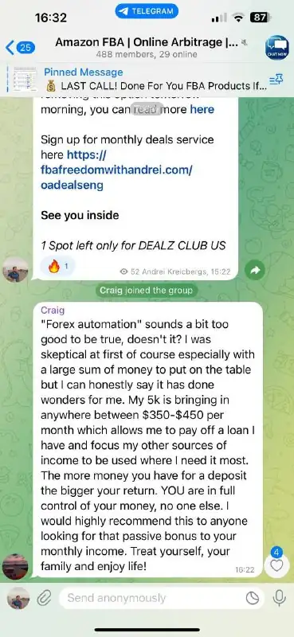
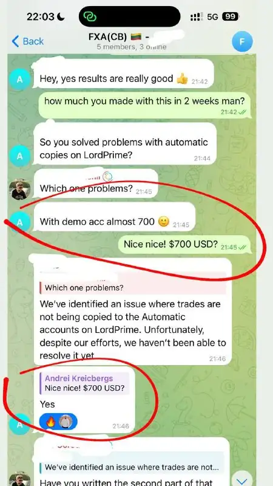
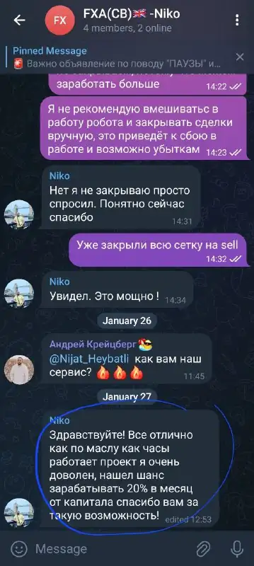
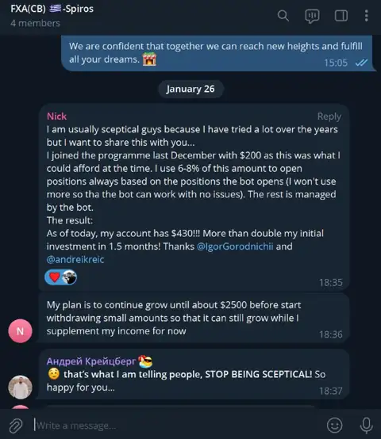
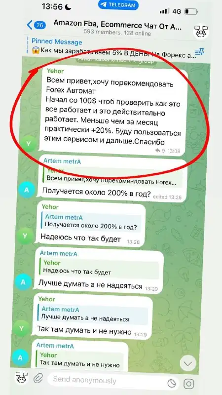
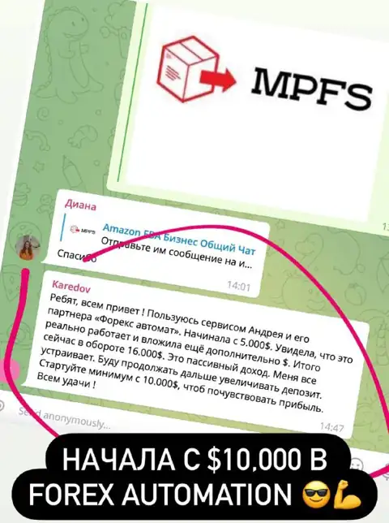
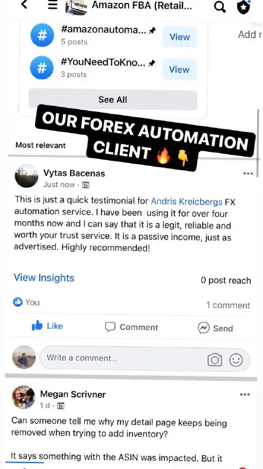
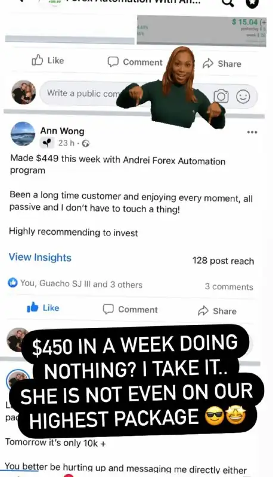
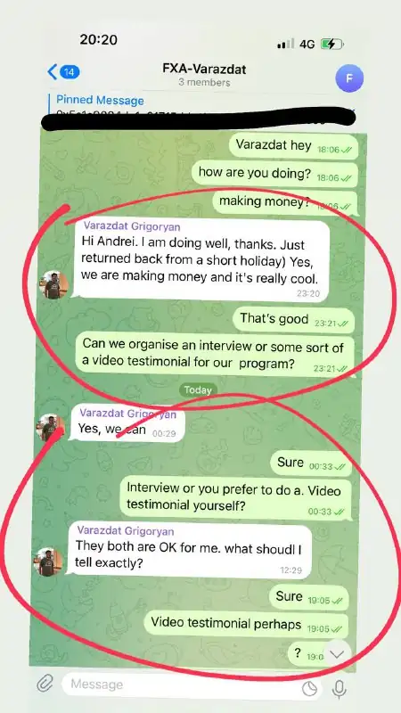

O que os nossos
clientes dizem
Prints sem edição de mensagens e relatórios de clientes desde 2022. Toque numa imagem para abrir em tamanho cheio.

Obrigado, está tudo certo e estamos satisfeitos. Pretendemos aumentar o depósito. Na semana passada pagamos uma taxa de $124, então o nosso ganho foi o mesmo; esta semana está no lucro.19.11.2026

Sim, o primeiro mês foi bom: cerca de $120 depois da divisão do lucro, sobre um investimento de $1.000, uns 12% líquidos.18.11.2026

Sim, estou satisfeito, obrigado, até trouxe um amigo. Comecei há 1,5 ano com um depósito de $15.000, agora está em quase $50.000: $35.000 de lucro líquido depois da taxa de vocês.13.11.2026
O lucro caiu no meu banco hoje à tarde, sendo que o saque foi só ontem. Perguntado quanto já ganhou com o serviço: $15.000.13.11.2026

Mais uma atualização para vocês: 4,76%, isso é bom demais. Queria ter 10K nisso. Cópia manual de operações com só $100, as pessoas são bobas de nem testar.13.11.2026

Um relatório para um cliente com taxa de $311,67 no período. O cliente: "Recebido, vou enviar e mando o print. Transferi $312, obrigado!"13.11.2026

Faço parte do programa de automação de Forex desde setembro passado e estou muito feliz com os resultados: de forma consistente, geralmente mais de 10% ao mês, e sem nenhum problema para sacar a qualquer momento.13.11.2026

Que dia, olha o meu lucro total até agora só com moedas, e 1,26% em um dia, simplesmente incrível como sempre.13.11.2026

No começo eu estava desconfiado, ainda mais com uma quantia grande, mas fez maravilhas por mim: os meus $5K rendem $350–450 por mês. Você tem controle total do seu dinheiro, mais ninguém.13.11.2026

Tudo certo, sem problemas, sempre satisfeito com o desempenho. Em 2 meses no robô de moedas estou com 1.076 GBP a mais, ou 21,53% sobre um depósito de 5K.13.11.2026

Obrigada, por enquanto vou deixar o meu dinheiro no SmartStrike. Perguntada se está ganhando dinheiro com a automação de Forex: "Sim, estou."05.11.2026

A conta de um cliente no primeiro dia: +$961,13 (+9,63%) sobre um depósito de cerca de $10.000. O cliente: "Impressionante! Acabei de entrar na conta, não é print."14.07.2026

Adorando! 21,69% no SmartStrike e 4,6% no IronPips. Até agora estou muito impressionado.25.04.2026

Já estou com vocês há 2 anos, claro que estou ganhando dinheiro!25.04.2026

Estou muito satisfeito com o andamento do trading: virou uma renda semanal consistente e confiável para mim. A gestão de risco é de primeira.10.12.2025

Mais de $400 de lucro em 19 dias, começando com um investimento de só $1K, sem mexer em nada. Também tirei mais de $500 com o sistema SmartStrike, começando com um investimento de $2.400.10.12.2025

Estou muito feliz com os resultados e também com o profissionalismo da equipe.10.12.2025

Estamos trabalhando juntos há quase um mês, e os sistemas propostos atendem às nossas expectativas. A equipe conhece bem o trabalho. Esperamos uma parceria de longo prazo.08.12.2025

Sim, ganhando um dinheiro: já são uns 42,76% desde o primeiro depósito. Estou pensando em depositar um pouco mais para ver se os lucros aumentam.18.10.2025

Ganhando um pouco: 7,54%, se não me engano. O print mostra o histórico de operações no ouro.30.09.2025

Queria agradecer à equipe pelos serviços! Em uns 30 dias de assinatura, entregou resultados estáveis de cerca de 25%.26.09.2025

Já fiz 200% desde junho de 2024. Mesmo tendo sido um investimento pequeno, tive bastante lucro.26.09.2025

Sim, primeira semana e está maravilhoso: de $1.022 para $1.536 USD, $515 de lucro. Meu marido também está abrindo uma conta e pretendemos depositar mais.02.08.2025

Olá! Vejo que já fez 37,6%. Líquido, são 18,8%, $189,92 sobre um depósito de $1.000.22.07.2025

Até agora, tudo certo! Estou pensando em não sacar nada nos próximos meses e deixar acumular. Pelas minhas contas, já são uns 37% no total.22.07.2025

Sim, os resultados são muito bons: quase $700 numa conta demo em 2 semanas.02.07.2025

Já está rodando, já são +$20. Obrigado, que bom que encontrei vocês.30.04.2025

Tudo indo bem: cerca de 1% de retorno por dia, uns $2K a mais desde que começamos com o robô novo, há um mês. É como dinheiro de graça, melhor que qualquer poupança.26.02.2025

Entrei no programa Forex Automation em janeiro e ganho de forma consistente; a equipe está sempre disponível. Pretendo aumentar o depósito para $20.000. É tudo muito simples, dinheiro no piloto automático, recomendo.18.01.2025

Ótima semana, equipe! Tivemos uns drawdowns grandes, mas a recuperação foi muito boa. Segue a confirmação do pagamento da minha parte do lucro ($1.121,44). Sou grato a todos vocês!18.01.2025

$2.500 sacados da conta conservadora. Adoro esse programa! Tenho $35K investidos e estou começando a fazer saques regulares.15.05.2024

O dinheiro caiu! Acabei de fazer mais um saque de $9K. O serviço de vocês é excelente; vocês me ajudaram a manter o rumo em tempos difíceis, obrigado.14.05.2024

Tive 40% de lucro de 1º de março a 1º de maio, é simplesmente inacreditável. Mandei mais $4,2K, então agora tenho $8K lá dentro.11.05.2024

Lucro semanal da conta de $301,29. O cliente: "Foi uma boa semana, vou acertar a taxa de vocês assim que der."11.05.2024

Adorando o trading de Forex. Coloquei mais $1K em 25 de março e já ganhei $338. É fantástico, muito obrigado.08.05.2024

Quando veio o drawdown, vocês se recuperaram muito bem. Vou colocar mais dinheiro.03.04.2024

Comecei em 17 de janeiro de 2024 com $1.000 e hoje tenho $1.186, quase 12% de lucro limpo em 5 semanas.04.03.2024

Comecei em 22 de janeiro de 2024 e depositei $21.500, depois dobrei o depósito para $43.000. O saldo atual é de $48.500, um aumento de $5.500.02.03.2024

O robô de Forex está indo muito bem: comecei com $150 e o meu depósito agora está em $185,22. São +23% em mais ou menos um mês e meio; estou muito satisfeito com o serviço.28.02.2024

Serviço muito bom até agora! Quero fazer um novo depósito o quanto antes. O serviço de vocês devia ser conhecido no mundo todo.10.02.2024

Ótimo! Adoro pagar vocês. Aqui está o print que confirma o pagamento da taxa, obrigado!31.01.2024

Está tudo ótimo, funciona como um relógio e estou muito satisfeito. Encontrei uma chance de ganhar 20% ao mês sobre o meu capital, obrigado!27.01.2024

Costumo ser desconfiado, mas entrei em dezembro passado com $200. Hoje a minha conta tem $430, mais que o dobro do investimento inicial em 1,5 mês.27.01.2024

Quero recomendar o Forex Automation. Comecei com $100 para conferir, e funciona de verdade: quase +20% em menos de um mês. Vou continuar usando o serviço.26.01.2024

Comecei com $100 porque estava desconfiado. Em uma semana o robô fez uns 10%, então coloquei mais. Um mês depois o meu retorno é de $581, uns 16%. Uma ótima forma de gerar renda passiva.15.12.2023

Em 2 semanas, com algumas posições que abri seguindo as escolhas do robô e com capital mínimo, cheguei a 32% de lucro total. Não vejo a hora de janeiro chegar.14.12.2023

Achei o serviço fantástico. O que mais valorizo é a comunicação de vocês: sempre me mantiveram informado e responderam às minhas perguntas. Quero investir mais com vocês.11.12.2023

Fazia tempo que eu procurava uma renda passiva e tinha minhas dúvidas. Testei com $100 e não me arrependi nem um pouco: em 4 meses fui aumentando a conta até $6.300. Obrigado pela oportunidade!11.11.2023

Esse robô agressivo de vocês é uma fera, vai com tudo!01.11.2023

Boa tarde, está tudo certo, e as últimas 2–3 semanas foram ótimas, obrigado. Está tudo excelente, estou satisfeito.01.11.2023

Sim, um pouco mais devagar do que eu imaginava, mas onde mais dá para ganhar um dinheiro extra assim sem fazer nada?16.06.2023

Estou testando o serviço de trading de Forex e tenho lucro praticamente desde o primeiro dia. Recomendo: dá para começar com só $100, e a configuração não podia ser mais simples.16.06.2023

Um cliente depois de fechar todas as operações e sacar o dinheiro: obrigado pelo ótimo trabalho, vou voltar a falar com vocês.10.02.2023

Sim! Uau, que dia incrível ontem! Muito empolgante, obrigado a todos. Foi uma surpresa maravilhosa.10.02.2023

Uso o serviço Forex Automation. Comecei com $5.000, vi que funciona de verdade e investi mais. Agora são $16.000 rodando; é renda passiva e estou satisfeito com tudo.17.12.2022

Acabamos de começar, é só a nossa primeira semana, mas parece muito promissor: $700 em um dia. A comunicação também é ótima. O print da conta mostra +$777,92 (+7,77%).16.10.2022

Uso o serviço há mais de quatro meses: é sério, confiável e merece a sua confiança. É renda passiva, do jeitinho que prometem.02.09.2022

Uso há 4 meses e tirei em média $200 por semana. É totalmente automático, posso sacar o meu investimento inicial a qualquer momento, e só eu controlo o dinheiro.02.09.2022

Relatório semanal para um cliente: lucro de $57,30, $282,07 e $48,36 em três contas (conservadora, moedas, metais). O cliente responde que a taxa já foi enviada.02.09.2022

No começo achei que era mais um golpe, mas resolvi testar. Depois de 45 dias aumentei o depósito, e o meu único arrependimento é não ter entrado antes.02.09.2022

Ganhei $449 nesta semana. Sou cliente há bastante tempo; é tudo passivo e não preciso mexer em nada.02.09.2022

Entrei há uns dois dias e já tive o meu primeiro lucro. Fazem todo o trading por mim, eu não preciso fazer nada. O print da conta mostra +$137,72 (+1,37%).02.09.2022

Conversa com um cliente: o lucro total no período foi de $457, e o cliente confirma o relatório.02.09.2022
Estou no programa há mais de 5 meses: eu entro com o depósito e a equipe faz a minha conta crescer com robôs de trading. Tiro de forma consistente $1.000–1.800 por mês.02.09.2022

O programa funciona de verdade e não exige nada de mim. Nos últimos 4 dias o lucro total foi de $232 sobre um investimento de 5000.02.09.2022

Sim, estamos ganhando dinheiro e isso é muito legal.02.09.2022

Faz 2 semanas que comecei, e o lucro total no período passa de $300. Agora ganho uns $50 por dia de renda passiva, além do meu negócio principal.02.09.2022

Não acredito que tive $487 de lucro em uma semana sem fazer nada. O melhor investimento que já fiz!02.09.2022
Comece com uma pergunta
Fale com a gente no Telegram ou no WhatsApp: indicamos uma corretora para o seu país e um modelo de risco que combine com você, montamos uma demo de 14 dias e ajudamos você a começar.
Fale com a gente no Telegram